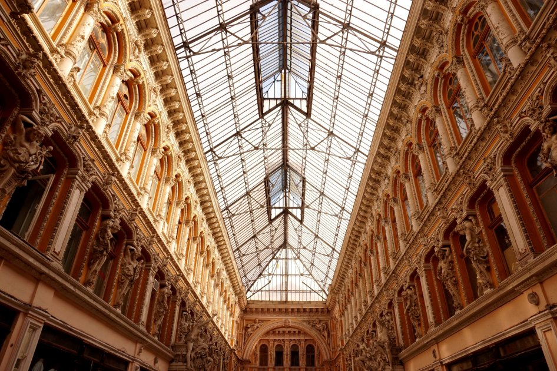
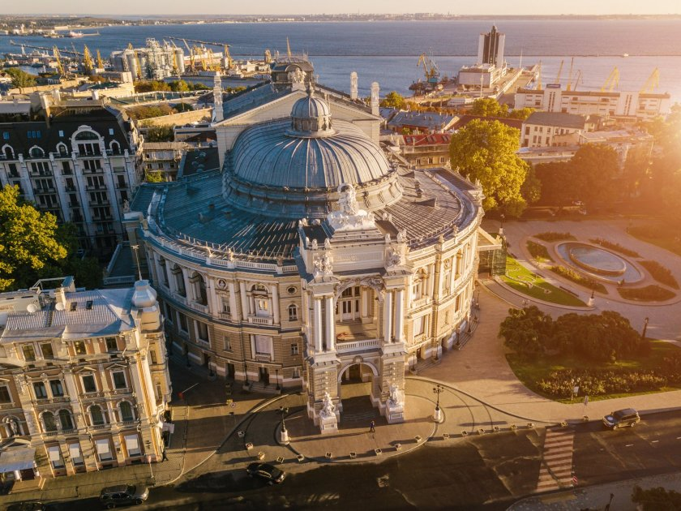
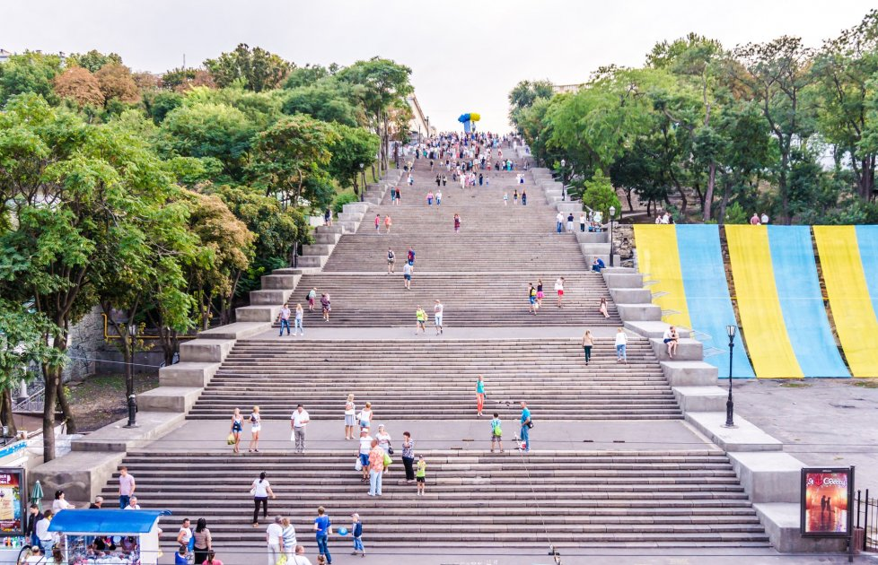

Визначні пам’ятки
Одеса має багато визначних пам'яток, серед яких - Одеський оперний театр, Потьомкінські сходи та Приморський бульвар.



Одеса - місто з багатою історією та культурою
Одеса має багато визначних пам'яток, серед яких - Одеський оперний театр, Потьомкінські сходи та Приморський бульвар.


